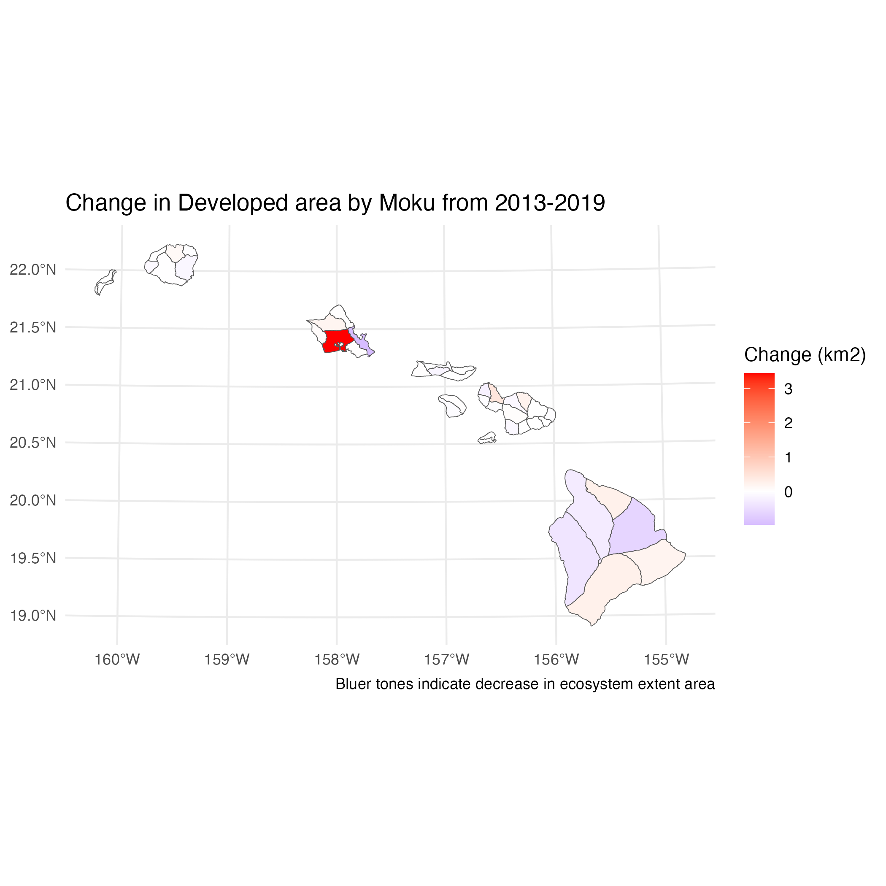
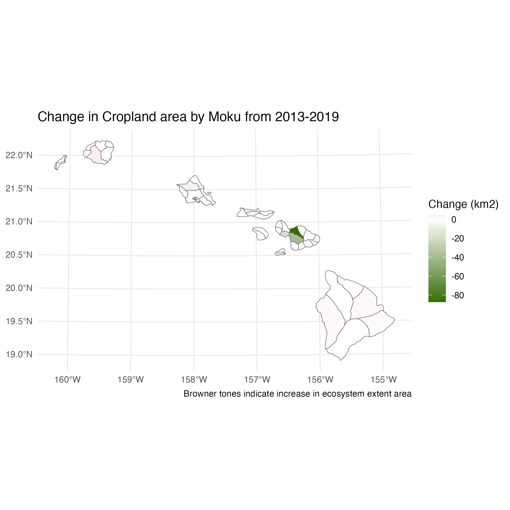
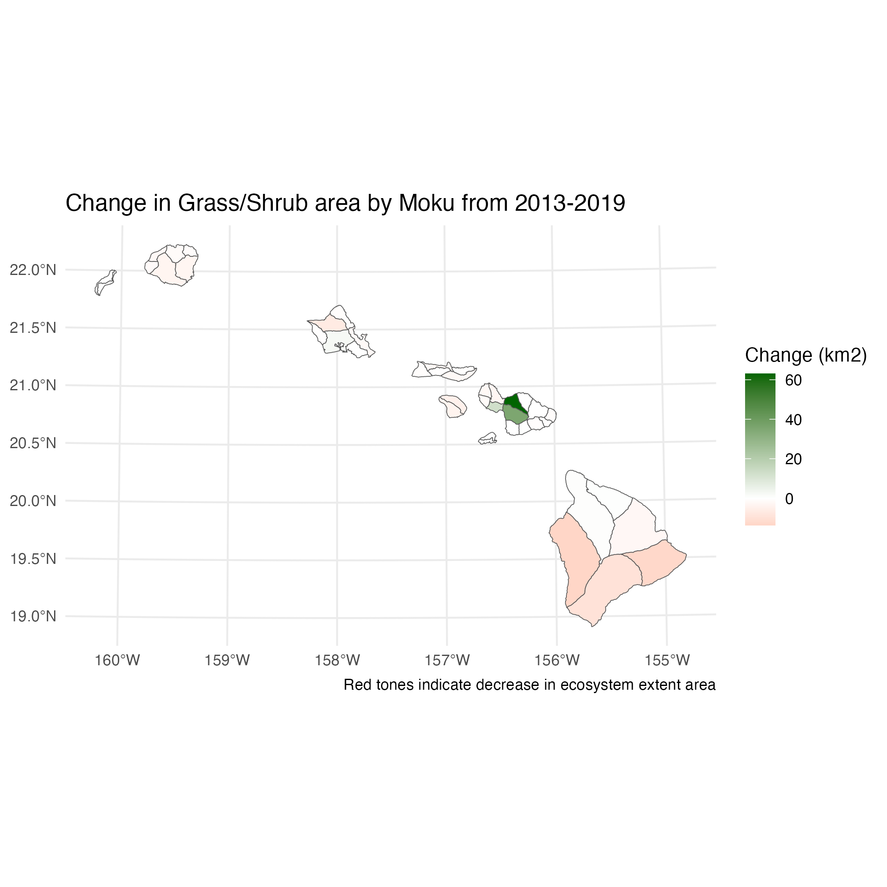
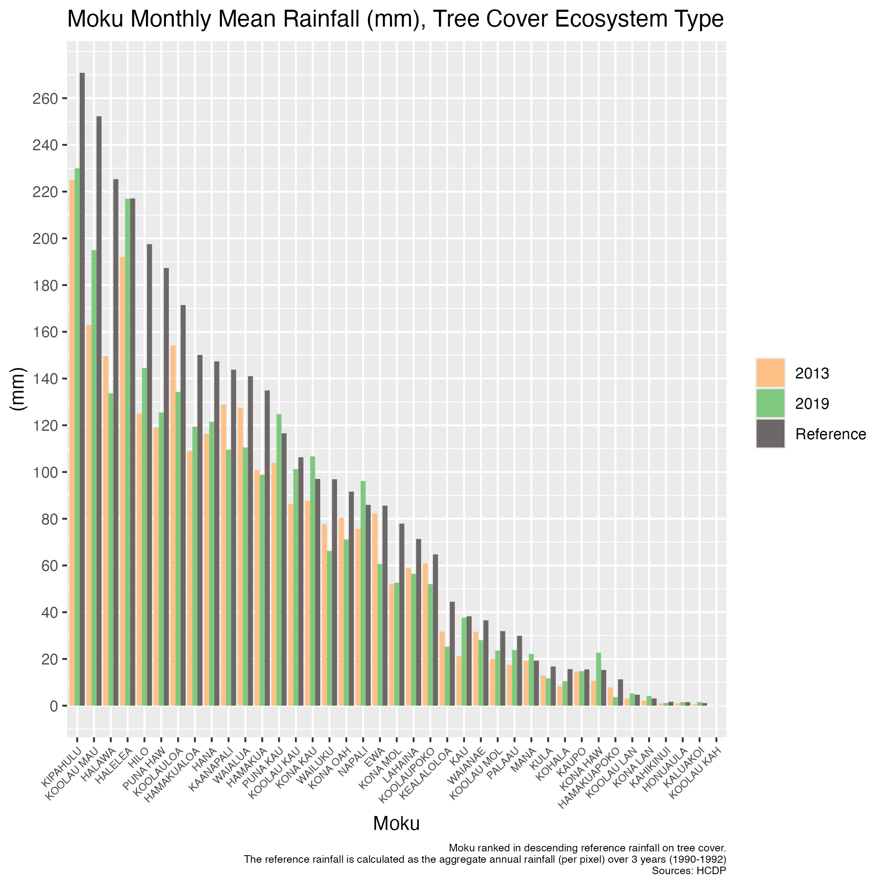

Heʻeia (PC: Aimee Sato)
International frameworks such as the UN System of Environmental-Economic Accounting (Ecosystem Accounts) (SEEA EA) and IUCN GET 2.0 set out a roadmap for globally consistent and comparable ecosystem accounting standards which offer a reliable way to assess changes in ecosystem “health”. Set against these international standards, there is currently uneven compliance and buy-in across the world, while research and large data gaps remain. My research advocates for natural capital accounting and ecosystem accounting in Hawaiʻi, by laying the foundational pilot accounts across all moku (districts) in the Main Hawaiian Islands.
The precipitous decline of native ecosystems in Hawaiʻi generates a strong need for conservation, however funding for such conservation work have not kept pace with this need. Ecosystem accounts for Hawaiʻi if done well, can catalyze awareness, change, and redirect needed financial resources to address conservation priorities and needs.
Preliminary Findings
Extent
Like in many places in Oceania, data limitations constrained the ability of the ecosystem extent accounts to identify most of the IUCN Ecosystem Funtional Groups (EFG) present in the Main Hawaiian Islands (MHI), except for one EFG, T7.4 (Urban and industrial ecosystems) (Keith et al., 2020). However, best available data used in the pilot extent accounts broadly cover 12 out of 42 EFGs existing in the MHI according to the IUCN. Ecosystem types accounted for in our study include- Developed, Grass/ Shrub, Tree Cover, Cropland, Pasture, Freshwater Wetlands, Estuarine Wetlands, and Barren.
Some highlights from 2013 and 2019 ecosystem extent accounts:




Conditions
Similar data limitations constrained the ecosystem condition accounts, with four condition variables for terrestrial EFGs (Burnt Area, Rainfall, Temperature, NDVI), and 14 for nearshore marine EFGs (Sea Surface Temperature, Photosynthetically Active Radiation, Degree Heating Weeks, kd490, Chlorophyll-a, Coral Cover, Adult Coral Density, Coral Diversity, Juvenile Coral Density, Primary Consumers, Secondary Consumers, Planktivores, Piscivores, Total Disease Prevalence).
Some highlights from ecosystem condition accounts for Tree Cover ecosystem type:

Applications
Imagine if we were able to assess extinction risk for species across Hawaiʻi, and have them be readily incorporated into everyday policy decicions? In a brief example below, I utilise the LIFE score methodology (Eyres et al., 2024), data from my pilot ecosystem accounts, and IUCN Ecosystem Functional Group (EFG) information (Keith et al., 2020) to identify possible changes to dry forests and thickets (EFG T1.2) in the moku of Kona, Oʻahu.
Historic estimates, which we term “human-absent” extent, of dry forests are shown here to be fairly extensive in the moku, but most of it has been altered by human land-use:

Making use of remotely sensed imagery of forest cover in 2013 and 2019, as well as rainfall conditions for both years, we identify likely areas suitable for such dry forests (left 2013, right 2019):

Although there has been large increases in potential habitat area for dry forests, there are two important details to consider. Firstly, its increase is encroaching into upland rainforests, and secondly much of that increase is beyond the “human-absent” range of the EFG. We only include expansion that falls within the “human-absent” range in the calculation of extinction risk.
The resulting score between 2013 and 2019 is a positive one (0.1), or a reduction in extinction risk for a species whose range (eg. Alaheʻe) is the entire extent of the dry forest. We also calculate the LIFE score for rainforest (EFG T1.1, Tropical/Subtropical lowland rainforests) in Kona, Oʻahu and the score is unsurprisingly a negative one (-0.03), or an increase in extinction risk for a species whose range is the entire extent of the rainforest. Because these scores are calculated such that they are normalised by their “human-absent” baseline, we can add them, which gives an overall score of 0.07. In which case, the overall impact is a positive one.
Some important caveats to remember, we have not accounted for any detail on survey data to establish actual range of the species. The extent changes are purely a result of remotely sensed data on forests and data on rainfall. We also assume that all areas of habitat are uniform, which is not the case in reality.